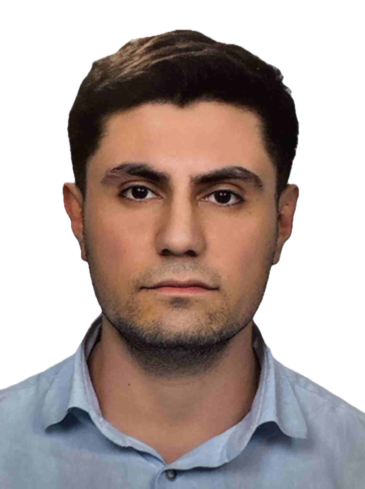

AI araştırmacısı, veri bilimci ve Ege Üniversitesi International Computer Institute'ta Bilgi Teknolojileri doktora öğrencisiyim. Çalışmalarım Geometric Deep Learning, Graph Neural Networks (GNN'ler), Spektral Graf Teorisi ve yapısal biyoinformatik (özellikle protein dinamikleri) üzerine yoğunlaşıyor. Matematiksel temelli, deterministik ve ölçeklenebilir yapay zeka çözümleri tasarlamaya odaklanıyorum.
Ege Üniversitesi, International Computer Institute · İzmir
Ege Üniversitesi, Fen Bilimleri Enstitüsü · İzmir — GNO: 4.00
Tez: "Çizge Teorisi ile Karmaşık Sistemlerin Zedelenebilirlik Analizi: Kısıtlı Ayrık Baskınlık Yaklaşımı" — bu çalışma RDD tabanlı topolojik maskeleme projesinin temelini oluşturuyor.
İzmir Yüksek Teknoloji Enstitüsü · İzmir — GPA: 2.96, 2 Onur Belgesi
İzmir — Uydu görüntüleri (.tif) ve GeoJSON verisinden tarımsal arazi sınırı tespiti (Random Forest ve CNN, F1‑Score: 0.83).
Profesyonel Sertifika — 6 kurs: proje başlatma, planlama, yürütme ve çevik proje yönetimi.
100+ saatlik program: Transformer mimarileri, RAG, LangChain, RLHF, model sıkıştırma ve Docker/Streamlit ile üretim dağıtımı.
Marmara, ODTÜ, İTÜ ve Boğaziçi Üniversitesi katkılarıyla düzenlenen modül sınavı.
Tamamlama belgesi.
Tamamlama belgesi.
Tamamlama belgesi.
Tamamlama belgesi.
Tamamlama belgesi.
Tamamlama belgesi.
Uygulamalı Excel, Photoshop, AutoCAD Teknikleri, Python Kodlama.
Şu anda Yapay Zeka ve Veri Bilimi alanlarında dersler hazırlamaktayım. Ayrıca Doktora dersleri için çalışmalar yapmaktayım.